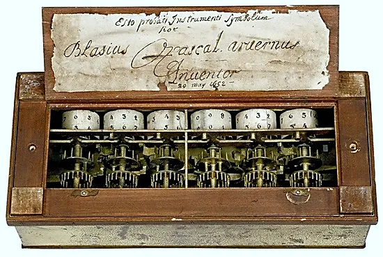
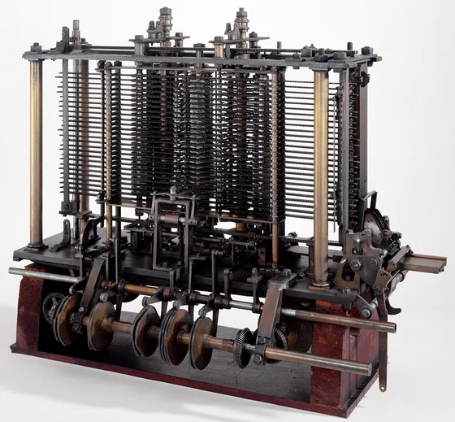
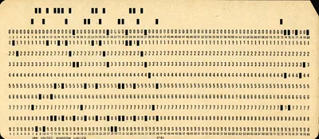

Chapter 1.2: Computation and Computational Thinking
Object Oriented Programming with Java
Programming and computationComputer scienceComputational thinkingHistory of computersTuring machinesLimits of computersDeclarative and imperative knowledgeAlgorithms and problemsSequence, selection, iteration
Sercan KÜLCÜ · Giresun University · Computer Engineering
Introduction
Learning Outcomes
Core concepts
Define programming, computation and computer science; explain the four skills of computational thinking (decomposition, pattern recognition, abstraction, algorithm design).
History
Tell fixed-program from stored-program computers; know Babbage, Lovelace, the ABC, Colossus, ENIAC, EDVAC and the von Neumann architecture.
Turing machines
Run a simple Turing machine step by step using its tape, head and rules.
Kinds of knowledge
Distinguish declarative (what?) from imperative (how?) knowledge using square roots and the GCD.
Algorithms and problems
List the properties of an algorithm; identify a problem's input and output, and pin down a vague request by asking questions.
Kinds of operations
Recognize sequence, selection and iteration; relate pseudocode's repeat … until to Java's do … while.
Programming and Computation
Programming
Programming is a way of giving a computer instructions.
A programmed computer can carry out complex tasks.
Programming languages (Java, Python, C…) are the tools we use to communicate with the computer.
Learning to program sharpens problem-solving and thinking skills.
Computers are everywhere now
At home and at work, in entertainment and in education.
Smartphones, tablets, laptops, home appliances, cars…
Thanks to the Internet the world is “one click” away: shopping, news, communication and education have gone digital.
Analogy: a computer is a very fast assistant that knows nothing on its own. A program is the written list of instructions telling it what to do, step by step.
Programming and Computation
The Role of Programming
Programming is the tool that gets computers to do the tasks we want.
Programmers make computers more useful and efficient in every part of our lives.
AutomationSmart thermostats, lighting and security systems; robots in factories.
HealthMedical devices (e.g. pacemakers, MRI), hospital information systems, appointment systems.
EducationOnline course platforms, teaching software, exam and grading systems.
In electrical and electronics engineering, too, embedded systems, signal processing and control software are all built by programming.
Programming and Computation
Computation
It is what computers fundamentally do.
It is the processing of data by a computer or computing device to carry out a task.
It involves mathematical operations, logical decisions and data handling.
Programming makes computation more effective and efficient.
Data analysisAverages, trends and charts from measurements.
SimulationA model of a circuit or of the weather.
Game developmentPhysics, collisions, AI… and much more.
Programming and Computation
The Building Blocks of Computation
MathOperations such as addition, subtraction, multiplication and division.
LogicDecisions are made by evaluating logical expressions: “If it is sunny, go outside.”
Computation takes data, processes it and produces a result, used to solve problems, analyze data or automate tasks. Programming tells the computer how to compute.
publicclass Computation {
publicstaticvoid main(String[] args) {
int a = 7, b = 3;
int sum = a + b; // mathint product = a * b; // mathboolean sunny = true; // logic
System.out.println("Sum: " + sum);
System.out.println("Product: " + product);
if (sunny) { // decision
System.out.println("Go outside");
}
}
}
Output
Sum: 10
Product: 21
Go outside
Programming and Computation · Code trace
A Computation Program: Code Trace
main starts. The inputs are stored as a = 7 and b = 3.
Math: a + b = 7 + 3 = 10.
Math: a * b = 7 × 3 = 21.
Logic: a boolean variable can only be true or false.
The result is joined to a string and printed.
The second result is printed.
Decision: sunny = true → the Yes branch is taken.
The condition is true, so the block runs. Data in, processed, result out.
publicclass Computation {
publicstaticvoid main(String[] args) {
int a = 7, b = 3;
int sum = a + b; // mathint product = a * b; // mathboolean sunny = true; // logic
System.out.println("Sum: " + sum);
System.out.println("Product: " + product);
if (sunny) { // decision
System.out.println("Go outside");
}
}
}
Computer Science
Computer Science Is More Than Learning Technology
Computer science is not just technical knowledge about computers; it is a discipline of problem solving.
It requires a deep understanding of how information is processed, stored and transmitted.
It is not limited to technology: technology is only a tool. The real goal is solving problems and understanding information better.
It builds the ability to define complex problems, analyze them and find effective solutions.
Analogy: computer science is no more about computers than astronomy is about telescopes. The telescope is a tool for studying the sky; the computer is a tool for solving problems.
Computer Science
Computer Science: Three Pillars
Computer science rests on logic, problem solving and creativity.
LogicThe ability to evaluate data and draw correct conclusions. It is the foundation of writing programs.
Problem solvingDefining and solving complex problems. Every problem is solved by a logical sequence of steps.
CreativityLeads to new and innovative solutions; the same problem can have many different solutions.
The more you program, the more all three grow together.
Computer Science
Technology and Social Responsibility
Computer science asks how technology can help people and contribute to solving social problems.
It helps us understand and improve the world, and stresses our responsibility to put technology at the service of humanity.
It is interesting not only for technology enthusiasts but for anyone who wants to sharpen problem-solving and thinking skills.
The programs we write affect real people: a bug in hospital software or a failure to protect personal data can have serious consequences.
Computer Science
What Is in Computer Science?
Computer science is a science that aims to understand, model and analyze reality.
It solves problems with algorithms and code.
AbstractionHiding the unneeded details of a complex system and keeping its essence. A subway map shows stations and lines, not streets.
Problem solvingBreaking a problem into parts, solving each step by step, and combining the solutions.
Art and designIt is not limited to logic and analysis: digital media, electronic music, games, animation…
Computer Science
Computational Thinking
A way of stating a problem so that a person or a computer can carry out its solution step by step. It rests on four skills; our example: the grade average of a class.
1. DecompositionSplit the big problem into small subproblems: read the grades, add them, divide by the count, print the result.
2. Pattern recognitionSpot the repeated work: reading each grade and adding it to the sum is the same step, i.e. a loop.
3. AbstractionDrop irrelevant detail: names and student numbers don't affect the average; only the grades and their count matter.
4. Algorithm designWrite the solution as finite, clear steps: sum ← 0; for each grade sum ← sum + grade; avg ← sum / n.
The Babylonian method and Euclid's algorithm arise the same way: spot a repeated step, drop the detail, turn the steps into a finite recipe.
History of Computers
The Computer
A device that carries out a series of computations and instructions, which together accomplish a task.
It processes data with mathematical calculations and logical instructions.
Today's computers run on electronic circuits and represent numbers digitally.
Processor (CPU)Executes instructions, computes.
Memory (RAM)The running program and its data; lost when power goes off.
ElectronicThe computer processes data with electric current; transistors do the switching instead of mechanical gears.
DigitalData is represented with 0s and 1s. Each 0/1 is a bit; 8 bits = 1 byte.
A two-level signal is easy to read despite noise: 3.9 V and 4.8 V both count as “1”. That is where digital systems get their reliability.
History of Computers
The Fixed-Program Computer
Designed to solve one specific problem; it runs a single predefined program built into its structure.
Its roots go back a long way:
The abacus, the Antikythera mechanism (2nd c. BC)
The Pascaline (Pascal, 1642), Leibniz’s stepped reckoner (1673)
Babbage’s Difference Engine (1822), Hollerith’s electric tabulating machine (1890)
The Atanasoff–Berry Computer (ABC), Turing’s Bombe (breaking Enigma)
Fixed-program machines laid the foundations of computer science, inspired technical progress and were the forerunners of modern computers.

The Pascaline could only add and subtract.
History of Computers
Charles Babbage and the Analytical Engine
Charles Babbage (1791–1871): English mathematician and inventor.
In 1837 he designed the Analytical Engine: the first design for a general-purpose, programmable computer.
It could compute and store results, and could be programmed for different calculations.
The parts of today's computer were already there: the store (memory), the mill (processor), punched-card input and printer output.
Punched cards came from the Jacquard loom (1804), whose patterns were set by cards.
It was never finished in Babbage’s lifetime, but it is seen as the forerunner of modern computers.

Trial model of part of the Analytical Engine.
History of Computers
Ada Lovelace: The First Program
Ada Lovelace (1815–1852): English mathematician and writer.
In 1843 she translated an article on the Analytical Engine and added her own notes.
In “Note G” she gave a step-by-step method for the engine to compute Bernoulli numbers: regarded as the first computer program.
She brought mathematical thinking and programming together scientifically; she is the first programmer in history.
Her visionShe was among the first to see that the machine could work not only with numbers but with symbols too (e.g. musical notes).
Her legacyThe Ada programming language, introduced in 1980, is named after her.
The program was written before the machine existed: an algorithm can be designed on paper.
History of Computers
A Short History of the Computer
Mechanical eraGears and cards: the Pascaline, the Difference and Analytical Engines.
Theoretical basisTuring (1936): what does “computable” mean? The idea of a universal machine.
Electronic eraVacuum-tube ABC, Colossus, ENIAC; the stored-program EDVAC.
1945 · Stored program: program and data share one memory; since a program is data too, an input can be the description of another program.
Von Neumann architecture: the processor reads instructions from memory in order; processor, memory and I/O talk over the address, data and control buses.
The timeline is evenly spaced; it does not show the real gaps between years.
History of Computers
The First Electronic Computers: ABC and Colossus
Atanasoff–Berry Computer (ABC)
John Atanasoff and Clifford Berry, Iowa State University, 1937–1942.
Regarded as the first electronic digital computer; its logic circuits used vacuum tubes.
It worked with numbers in binary (0/1).
Memory: capacitors on rotating drums.
Not programmable: it only solved systems of linear equations (fixed program).
Colossus Mark 1
Tommy Flowers and his team, Bletchley Park (England), 1944.
The first programmable electronic digital computer, programmed with switches and plugs.
It broke encrypted enemy messages in World War II.
It used about 1600 vacuum tubes: far faster and more flexible than mechanical devices.
It contributed greatly to the progress of computing.
History of Computers
The Electronic Valve: Vacuum Tube
An evacuated glass tube: a heated cathode emits electrons, the anode collects them.
A small voltage on the grid between them turns the current on or off: the tube acts as an electronic switch (on = 1, off = 0).
With no moving parts it switches thousands of times faster than mechanical relays.
Drawbacks: it runs hot, uses a lot of power and fails often.
The transistor, invented in 1947, does the same switching far smaller, cooler and more reliably; today's processors hold billions of them.
History of Computers
ENIAC and EDVAC
ENIAC (1946)
John Mauchly and J. Presper Eckert, University of Pennsylvania (USA).
The first large-scale general-purpose electronic computer.
About 17,500 vacuum tubes instead of mechanical parts: faster.
About 5000 additions per second; large computations such as artillery firing tables.
It stored numbers in decimal; programming meant replugging cables by hand.
EDVAC (1949–1951)
Its design was described in John von Neumann’s 1945 report; it was fully running by 1951.
Unlike ENIAC, it used binary.
It kept program and data in the same memory (stored program).
Instructions ran in order, with conditional jumps.
This design is the von Neumann architecture, the basis of today's computers.
History of Computers
The General-Purpose Computer
Programmable to fit the user's needs; designed for a wide range of applications.
Used in business, education, entertainment and more. Changing the program adapts it to new tasks: the same laptop plays music one minute and compiles Java the next.
It consists of a processor, memory and input/output units. The processor processes data according to instructions and produces results.
AutomationAutomates business processes.
ScienceSpeeds up scientific computation.
CommunicationMakes communication easier.
History of Computers
Early Programs
Early programs were mostly mathematical calculations, for scientific and military uses.
Programs and data were entered on punched cards: the holes in each column encode one character.
The first widely used high-level language, Fortran (Formula Translation), was developed at IBM under John Backus and released in 1957.
Fortran was widely used for scientific computing, and still is.

An 80-column punched card: one card ≈ one line of program.
A high-level language lets the programmer write math-like expressions such as K = I + J; a compiler turns them into machine instructions. Java (1995) is a high-level language too.
Turing Machines
The Universal Turing Machine
An abstract, general-purpose model of a computer defined by Alan Turing in 1936; one of the most fundamental models in computer science.
It takes the description of another Turing machine as input and simulates that machine.
So it can solve every computable problem. It is the theoretical basis for modern computers being universally programmable.
The stored-program computer and the universal Turing machine are two key milestones of computing.
Turing Machines
The Parts of a Turing Machine
TapeAn infinitely long strip divided into cells. It holds input, output and intermediate results; each cell has a symbol (0, 1, blank □…).
Tape headPoints at one cell at a time. It reads the symbol there, writes a new one and moves one cell left or right.
State and rulesThe current state (q0, q1…) and the symbol read together determine what to write, where to move and the next state.
Just three rules: every 0 becomes 1, every 1 becomes 0; it halts at a blank cell.
Start: state q0, head on cell 0. The tape holds 0110.
Read 0 at cell 0 → rule 1: write 1, move right.
Read 1 at cell 1 → rule 2: write 0, move right.
Read 1 at cell 2 → rule 2: write 0, move right.
Read 0 at cell 3 → rule 1: write 1, move right.
Read □ → rule 3: the machine halts. The tape now holds 1001.
This rule table is the machine’s “program”. A universal machine can read such a table from its tape and run it.
Turing Machines
Defining the Limits of Computation
The Turing machine pins down precisely what computation is and where its limits lie.
Church–Turing thesis: anything computable by a step-by-step method can be computed by a Turing machine.
But not every problem is computable. Turing proved that no algorithm can correctly answer “Does this program ever halt?” (the halting problem) for every program.
It is regarded as one of the most important scientific results of the 20th century.
Connecting to Java: Java, Python and C are Turing complete: they can do any computation a Turing machine can. Languages differ in speed and convenience, not in power.
Limits of Computers
The Limits of Computers
Computers do complex calculations very fast, thanks to technological progress. Still, every resource is limited.
Processor speedSets how fast calculations run, but it is limited.
MemoryThe capacity to hold data. More memory allows more complex tasks, but memory is limited too.
Data throughputProcessing large data sets takes time and resources.
EnergyComputers consume energy, a limited resource; a more powerful computer needs more of it.
Programmers work within these limits by using resources efficiently: they choose algorithms that do the same job in fewer steps and with less memory.
Limits of Computers
The Limits Show Up in Java Too
publicclass Limits {
publicstaticvoid main(String[] args) {
int max = Integer.MAX_VALUE;
System.out.println(max);
System.out.println(max + 1); // overflow
System.out.println(0.1 + 0.2); // precision
System.out.println(5 / 2); // int division
}
}
Output
2147483647
-2147483648
0.30000000000000004
2
An int takes 32 bits: its largest value is 231 − 1 = 2,147,483,647. Add one and it overflows, wrapping to the smallest value.
A double stores numbers in binary with about 15–16 digits of precision; 0.1 has no exact binary form.
Dividing two ints gives an int: 5 / 2 = 2 (the fraction is dropped).
Limits of Computers
Machines and Technology
Technology shapes people's lives, and machines are a big part of it.
Machines work fast and efficiently, and their power has grown steadily since the Industrial Revolution. Yet the machines we can build have limits.
Physical limitsSize, weight and durability obey physics: a transistor can't be smaller than a few atoms, and no signal travels faster than light.
Energy limitsMachines need energy and energy is finite; a more powerful machine needs more power and cooling.
Technological limitsNew materials, design ideas and algorithms can push the limits.
Understanding the limits lets us design better, more efficient machines. In software, that means algorithms that solve the problem with fewer resources.
Kinds of Knowledge
Knowledge: Declarative and Imperative
Knowledge is the understanding that helps people or machines make sense of the world and solve problems. It comes in two forms:
Declarative knowledge
Imperative knowledge
Question
What is it?
How is it done?
Form
Definition, axiom, fact
Ordered instructions, recipe
Testing
Checked as true or false
Follow the steps, get the result
Square root
y is the square root of x if y·y = x
Babylonian method: guess, improve, repeat
Everyday example
“Cake is a dessert made of flour, sugar and eggs.”
A cake recipe: “Beat the eggs, add the flour, bake 35 min at 180 °C.”
A computer needs imperative knowledge: programs spell out “how to do it”. A declarative definition is what we use to test whether the result is right.
Kinds of Knowledge
Declarative Knowledge
Knowledge stated explicitly; it can be checked as true or false.
Expressed through axioms or definitions: it says what something is and how it is defined.
It can also state facts: true, verifiable statements about the world (“Water boils at 100 °C” at sea level).
Example definition
y is the square root of x ⇔ y · y = x and y ≥ 0.
With this definition we can test a guess: 4 · 4 = 16, so 4 is the square root of 16. But it doesn't say how to compute a square root: we can't get √2 directly from it.
Kinds of Knowledge
Imperative Knowledge: Square Roots by the Babylonian Method
Imperative knowledge is instructions for how to do something. The Babylonian method finds a square root step by step:
Take x.
Pick an initial guess y0 (e.g. y0 = 1).
If yn² ≈ x, stop; the answer is yn.
Otherwise compute a new guess: yn+1 = (yn + x / yn) / 2.
Go back to step 3.
Why does it work? If y is too big, x / y is too small (or vice versa); their average is closer to the true root. Each round brings the guess closer.
n
yn (x = 16)
yn²
0
1.000000
1.000000
1
8.500000
72.250000
2
5.191176
26.948313
3
4.136665
17.111995
4
4.002258
16.018065
5
4.000001
16.000005
Five rounds give a value very close to 4.
Kinds of Knowledge · Code trace
The Babylonian Method in Java, Step by Step
We want the square root of x = 16 (a Java double shows 16 as 16.0).
Initial guess y0 = 1.
Condition: |y·y − x| = 15 > 0.001 → true, enter the loop.
The new guess is computed and printed: y = 8.5.
Condition: |y·y − x| = 56.25 > 0.001 → true, enter the loop.
The new guess is computed and printed: y = 5.1911764705882355.
Condition: |y·y − x| = 10.9483 > 0.001 → true, enter the loop.
The new guess is computed and printed: y = 4.136664722546242.
Condition: |y·y − x| = 1.112 > 0.001 → true, enter the loop.
The new guess is computed and printed: y = 4.002257524798522.
Condition: |y·y − x| = 0.0180653 > 0.001 → true, enter the loop.
The new guess is computed and printed: y = 4.000000636692939.
The result is printed: not exactly 4, but a very close approximation.
double x = 16; // find its square rootdouble y = 1; // initial guess y0while (Math.abs(y * y - x) > 0.001) {
y = (y + x / y) / 2; // new guess
System.out.println(y);
}
System.out.println("Square root ≈ " + y);
Kinds of Knowledge
Greatest Common Divisor (GCD): Two Definitions
The GCD of two numbers is the largest positive integer that divides both. Example: the divisors of 12 are 1, 2, 3, 4, 6, 12; of 18, 1, 2, 3, 6, 9, 18 → GCD(12, 18) = 6.
Declarative definitionSays what the GCD is: d divides both a and b (a = d·x and b = d·y for some integers x, y) and is the largest such number. It lets you test a candidate but gives no way to find the GCD.
Imperative definition: Euclid's algorithmSays how to find the GCD: divide and take the remainder, repeating until the remainder is 0. From Euclid's Elements (around 300 BC), it is one of the oldest known algorithms.
Kinds of Knowledge
Euclid's Algorithm
The steps
Take two positive integers a and b (a ≥ b).
Divide a by b and call the remainder r: r = a mod b.
If r = 0, stop: GCD = b.
Otherwise set a to b and b to r.
Go back to step 2.
Why is it correct? Any number dividing a and b also divides r = a − k·b; conversely, any number dividing b and r also divides a = k·b + r. Both pairs have the same common divisors, so GCD(a, b) = GCD(b, r): the numbers shrink but the GCD stays.
The last divisor b = 6 is the answer: GCD(48, 18) = 6.
int a = 48, b = 18; // a >= bint r = a % b; // remainderwhile (r != 0) {
a = b;
b = r;
r = a % b;
}
System.out.println("GCD = " + b);
Algorithms and Problems
Algorithms
An algorithm is a step-by-step method for solving a problem: a recipe listing the steps to follow.
It says how to do a task and helps simplify complex problems.
It is the basis of every program: programming is expressing algorithms in a programming language.
Computer science is largely the design and analysis of algorithms.
A good programmer can choose and implement the right algorithm for a problem.
An algorithm…
states its steps clearly,
puts them in a logical order,
terminates after finitely many steps,
aims to solve the problem.
A well-designed algorithm is correct and efficient. The word comes from the 9th-century mathematician al-Khwarizmi.
Algorithms and Problems
Input, Process, Output
First define clearly what the program or algorithm must do: its steps and output.
Specifying a problem has two parts:
Input: the data needed to solve the problem.
Output: the result, the information we want.
To define a problem, ask What? Who? Where? When? How? Why? “Compute the grade average” is vague: without knowing how many grades there are, their weights and whether the result is whole or decimal, your program may solve the wrong problem.
Feedback: adjusting the input or process based on the output (e.g. a thermostat measures the temperature and switches the heater on or off).
Algorithmic Operations
Kinds of Algorithmic Operations
Every algorithm is built from three kinds of operations. They exist in every programming language, form the basic structure of algorithms and help keep complexity under control.
SequenceEach operation runs after the previous one, in order. E.g. read the data, process it, produce the result.
SelectionIf a condition holds, do one thing; otherwise do another. E.g. is the number positive?
IterationAn operation repeats as long as a condition holds. E.g. adding up all the numbers in a list.
Algorithmic Operations
Iteration: Repeating Actions
Repeats some actions until the loop condition becomes false; handy for walking through lists and processing data.
while: condition first, then body
While i > 0, add 1 to s and subtract 1 from i.
while i > 0 do
set s to s + 1
set i to i - 1
int s = 0, i = 3;
while (i > 0) {
s = s + 1;
i = i - 1;
}
repeat … until: body first
Print k and increment it until k is greater than n.
repeat
print k
set k to k + 1
until k > n
int k = 1, n = 3;
do {
System.out.println(k);
k = k + 1;
} while (k <= n);
Java has no repeat … until; its counterpart is do … while with the condition negated: “until k > n” = “while k ≤ n”. For k = 1, n = 3 the output is 1, 2, 3. If the body never makes the condition false, the loop runs forever; stop a stuck program with the IDE’s stop button or Ctrl+C in the console.
Summary
Summary
Concept
Key point
Programming / computation
Giving the computer instructions / processing data with math and logic to produce a result.
Computer science
Logic, problem solving and creativity; technology is only a tool.
Fixed / stored program
Function built into hardware / program in memory, changeable (EDVAC, von Neumann).
Turing machine
Tape + head + rules; computes everything computable, but not every problem is computable.
Declarative / imperative
“What is it?” (definition, testing) / “How is it done?” (steps: Babylonian, Euclid).
Algorithm, pseudocode
Finite, ordered, clear steps; fix the input and output first, then write the steps.
Kinds of operations
Sequence (in order), selection (if/else), iteration (while, do-while, for).
Loop
Condition + body; the body must eventually make the condition false, or the loop is infinite.
Summary
Common Mistakes
Forgetting the semicolonint a = 5 → error: ';' expected. Pseudocode is relaxed; in Java every statement ends with ;.
Mixing up = and ==if (x = 5) → error: incompatible types: int cannot be converted to boolean. Comparison is ==.
Not initializingint sum; System.out.println(sum); → error: variable sum might not have been initialized.
Integer division5 / 2 = 2, 9 / 5 = 1. For a decimal result write 5 / 2.0 or 5.0 / 2.
Decimal separatorOn a computer set to a Turkish locale, nextDouble() expects “1,75”; typing “1.75” throws an InputMismatchException.
Loop logic errorsStarting the maximum at 0 (wrong for a negative list); forgetting to update the loop variable (infinite loop). The compiler catches neither.
Summary
Sample Problems
Which is declarative and which imperative? (a) “A number is even if it is divisible by 2.” (b) “Divide the number by 2; if the remainder is 0, print ‘even’.”
Find GCD(84, 36) with Euclid's algorithm. How many divisions does it take?
Compute two steps of the Babylonian method for √10 starting from y0 = 3.
Write the input, output and pseudocode of a program that averages three grades. What is the output for 40, 75, 90?
In the while example, starting from s = 0, i = 5, how many times does the loop run, and what are s and i at the end?
How many steps does the bit-flipping Turing machine take on the tape 1010, and what is left on the tape?
Show answers
(a) declarative: it defines what evenness is. (b) imperative: it says how to decide.
84 mod 36 = 12, 36 mod 12 = 0 → GCD = 12; 2 divisions.